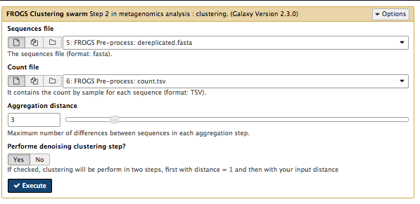
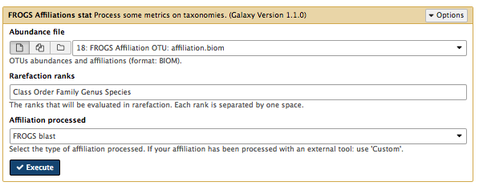

Metagenomics
- aim: to find taxa and/or genes(infer functions) in sample/s
- uses environmental samples (not cultured)
- uses 16S rRNA if classifying bacteria in sample
- uses WGS if trying to use DNA to identify the functions of genes (and to see what pathways are happening)
- compare microbial communities from different environments: do this by comparing the metagenome: e.g. GC-content, k-mers, size, how many spp, functions of genes
- eg for function, can compare to a database (COG or KEGG) and see whether metagenomes differ (statistically test) -
- More about 16S rRNA: The 16S sequence is RNA that makes up part of the bacterial ribosome (together with other rRNA and protein). The operon is 16S, 23S, 5S - and there may be many copies of the operon (7 in E coli).
Overview of FROGS
- Tool: FROGS (in Galaxy) - Find Rapidly OTU with Galaxy Solution
- uses a different way of clustering similar sequences into OTUs.
Get data
- The data: paired-end Illumina reads from ?two ?environmental samples
- Data location: …https://drive.google.com/open?id=0B-DKulJTTftlT2djQmJ4aTN6Q1U (or put in public.html folder or swift)
-
Upload tar.gz or unzip first?
-
Note: change file type to fastqsanger for each of the input reads
-
In Galaxy:
-
how to upload the files into current history
-
In the Galaxy tools panel, in the top search bar, type FROGS.
- This will bring up the various tools available.
- We will be using 6 of these tools.
1. Pre-process
What it does:
- if data is not contiged, will overlap read1 and read2 (allows some mismatch in overlapping region)
- filters out contigs that are too big or small
- if using illumina standard protocol: looks for those primers (primers provided?) - filters out contigs without primers. cuts primer seqs.
- filter out seqs that are too small or poor qual.
- de-replication - remove duplicates but keep a copy of the number of counts for each duplicate
Input: R1 and R2 reads (multiple samples).
Sequencer - IlluminaInput type - Files by samplesReads alread contiged? - NoSamples - Name - sample1 –note no spacesReads1 -01R1.fq Reads2 -01R2.fq Insert Samples - click plus signSamples - Name - sample2 –note no spacesReads1 -02R1.fq Reads2 -02R2.fq Reads 1 size - 250Reads 2 size - 250Expected amplicon size - 420Minimum amplicon size - 380Maximum amplicon size - 460Sequencing protocol - Illumina standard5’ primer - GGCGVACGGGTGAGTAA3’ primer - GTGCCAGCNGCNGCGG //note needs to be in 5’ to 3’ orientationExecute

Output: 3 files
-
report.html -
shows how samples were filtered. eg. the number of reads kept at each filtering stage.
- (what would be a problem to see here? lots of reads removed at a particular filtering stage?) – e.g. if many (>20%) are lost at the overlapping stage the data could be poor quality.
- so any of these bars low compared to first bar is bad
compare display amplicon lengths before and after
also: eg one sample might be bad compared to other samples
-
counts.tsv -
number of (the same seq) in sample 1 and sample 2
-
dereplicated.fasta this is the sequences (just one copy if there are dups)
2. Clustering swarm
Sequences are clustered into groups using Swarm.
Input: the fasta and counts file from pre-processing.
What it does: Sorts reads by abundance. Clusters the reads into pre-clusters using Swarm and distance parameter of 1. Sorts these pre-clusters by abundance. Cluster the pre-clusters using Swarm and a user-specified distance.
settings:
Sequences files : dereplicated_file from step 1Counts file : counts file from step 1Aggregation distance : 3Perform deionising clustering step? : YesExecute

Outputs:
- abundance
file in biom format seed_sequences.fasta - the cluster (OTU) representative sequenceswarms.composition.tsv - what is in each cluster.
3. Remove chimera
Closely-related sequences may form chimeras (mixed sequences) during PCR (libray prep). This step removes these sequences.
How it works: splits input data into samples uses vsearch to find chimeras in each sample removes these
Sequences file :seed_sequences.fasta Abundance type :BIOM file Abundance file :abundance.biom Execute

Outputs:
A filtered file containing no chimeras non_chimera.fasta A filtered abundance file containing no chimeras non_chimera.biom Summary report.html
seems to be a lot removed? - yes a lot of clusters were removed but still 70% of actual reads.
4. Filters
The OTUs have now been clustered. In this step, we will filter out some of the OTUs. (? we have set 2 samples per OTU - i.e. OTU must be in both sample? OTU must contain at least 0.005 percent of all the seqs?)
Sequences file :non_chimera.fasta Abundance file :non_chimera_abundance.biom *** THE FILTERS ON OTUS IN SAMPLES, OTUS SIZE and SEQUENCE PERCENTAGE : Apply filtersMinimum number of samples : 2Minimum proportion/number of sequences to keep OTU : 0.00005N biggest OTU : leave blank*** THE FILTERS ON RDP : No filters*** THE FILTERS ON BLAST : No filters*** THE FILTERS ON CONTAMINATIONS : No filtersExecute
 ]
]
Outputs: a filtered abundance and fasta file an excluded.txt a report.html
only kept %20 of OTUs? this is ok kept most of the sequences (the abundance pie)
We should do 3+ samples Then could click on Venn diagram here and see intersection.
5. Affliations OTU
OTUs- Operation Taxonomic Unit - this is a cluster of sequences. - this step adds the taxonomy to the abundance file. (why?) - uses the SILVA database for rRNA- that has been filtered for only (16S or all 30S?), non-redundant, keeping certain taxonomic levels, and split into pro and eukaryotes. - this step uses blastn+ to align each OTU against seqs in the dbase, keeping the best. - It can return multi-affiliation - see notes below tool panel.
Using reference database : silva123Also perform RDP assignation : NoOTU seed sequence : output.fasta from step 4Abundance file : output.biom from step 4Execute

Outputs:
abundance file with affiliation
report.html
6. Affiliations stat
- Computes some statistics
-
generates a report of the OTUs/taxonomy found
-
Abundance file :affiliation.biom from step 5 Rarefaction ranks : Class Order Family Genus SpeciesAffiliation processed : FROGS blastExecute

Outputs:
-
click on Display global distribution - this is the pooled info
-
Pie chart thing - how to read - start in the centre. major groups each have a segment by colour. then more detail as you go outwards.
-
click cross to exit
-
tick the boxes next to the samples - or one at a time
- then with selection order - click Display rarefaction
- Rarefaction curve - what does it mean - x axis is diversity (eg number of classes). y axes is how many samples processes. So it shows how many samples you need to process before you are covering the diversity. ie whether you have adequately covered the diversity.
- or click Display Distribution
Links
- FROGS slides by Yvan Le Bras https://f1000research.com/slides/5-1832
- The SILVA database: https://www.arb-silva.de/
- Other metagenomics software:
- QIIME: http://qiime.org/
- UPARSE: http://www.drive5.com/uparse/
- MOTHUR: https://www.mothur.org/
- MG-RAST: http://metagenomics.anl.gov/